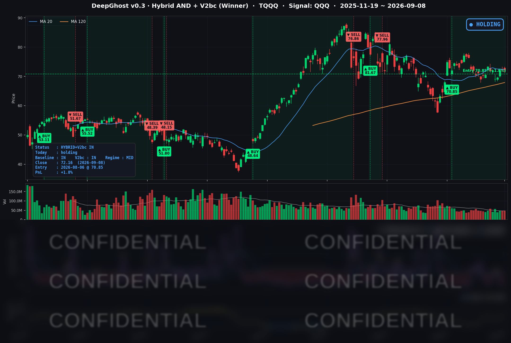

👻 매일 시그널과 히스토리를 홈페이지에서 한눈에 → www.ghostai.co.kr
회원 페이지 안내 — 홈페이지에서 회원을 선착순 100명 모집하고 있습니다. 블로그/유투브보다 먼저 업데이트되며 AI 생성 신호를 공개하고 분석 레포트를 제공합니다.
S&P 500 종목의 절반이 1% 넘게 내렸습니다. 유가는 배럴당 100달러에 붙었고 10년물 금리는 약 3년 만의 최고 종가입니다.
📊 오늘의 매매 신호
| 항목 | 내용 |
|---|---|
| 오늘 할 일 | ✅ 아무것도 안 해도 됩니다 |
| 포지션 상태 | 📈 TQQQ 보유 중 (IN POSITION) |
| 매수 진입일 | 2026-08-06 (23거래일째) |
| 진입가 → 현재가 | $70.85 → $72.16 |
| 현재 포지션 수익 | +1.85% |
TQQQ 시그널 — IN POSITION
현재 상태: 매수 포지션 유지 중 | 이번 포지션 수익률 +1.85%

나스닥100(QQQ)이 -0.08%, TQQQ는 -0.29% 마감했습니다. 전략의 평가손익은 전 거래일 +2.15%에서 +1.85%로 줄었습니다. 8월 6일 진입 이후 23거래일째 보유 상태이고, TQQQ 쪽에서 새로 발생한 매매 신호는 없습니다.
9월 7일(월) 노동절 휴장 때문에 오늘은 사흘 만에 열린 장이었습니다. 주말과 휴일 사이에 쌓인 뉴스가 한 번에 반영되는 날이라 개장 갭이 클 수 있었지만, 실제 갭은 S&P 500 구성종목 중앙값 기준 -0.49%로 크지 않았습니다.
오늘 미국 시장 — 시황 요약
지수 마감
| 지수 | 종가 | 등락률 | 비교 기준 |
|---|---|---|---|
| S&P 500 | 7,673.52 | -0.58% | 9/4 종가 대비 |
| 나스닥 종합 | 26,421.41 | -0.32% | 9/4 종가 대비 |
| 다우존스 | 52,786.07 | -1.18% | 9/4 종가 대비 |
| 러셀 2000 | 2,960.20 | -0.52% | 9/4 종가 대비 |
| QQQ (나스닥100) | 718.36 | -0.08% | 9/4 종가 대비 |
| TQQQ | 72.16 | -0.29% | 9/4 종가 대비 |
지수 등락률만 보면 조용한 하루지만 종목 단위로는 그렇지 않았습니다. S&P 500 구성종목 497개 중 353개가 내렸고 상승은 143개였습니다. 중앙값 종목은 -1.06%, 절반이 넘는 51%가 1% 넘게 내렸습니다. 지수(-0.58%)와 중앙값(-1.06%)의 0.48%p 차이는 시가총액 큰 소수 종목이 지수를 떠받쳤다는 뜻입니다.
오른 종목 비율은 3거래일 연속 줄었습니다. 9월 3일 67% → 9월 4일 34% → 오늘 28.8%입니다. 같은 기간 지수는 +1.06% → -0.38% → -0.58%로 완만하게 내렸을 뿐입니다.
다우가 -1.18%로 가장 약했던 것도 같은 이유입니다. 구성 종목이 30개뿐이라 폭이 좁은 상승의 혜택을 받지 못했고, 암젠이 -10.08%(노바티스의 pelacarsen 3상 결과 부진), 하우멧이 -10.70%(스페이스X의 가스터빈 블레이드 내재화 발표)로 크게 내리면서 지수를 끌어내렸습니다.
국채 금리 동향
| 만기 | 수익률 | 전 거래일 대비 |
|---|---|---|
| 3개월 | 3.775% | +1.8bp |
| 5년 | 4.573% | +2.3bp |
| 10년 | 4.806% | +2.2bp |
| 30년 | 5.264% | +1.8bp |
하루 변화폭은 2bp 안팎으로 작았지만 레벨이 중요합니다. 10년물 4.806%는 2023년 10월 31일 이후 가장 높은 종가이고, 5년물 4.573%도 최근 250거래일 최고치입니다. 장단기 스프레드(10년−3개월)는 +103.1bp로 정상 커브를 유지했고, 커브 전 구간이 함께 올랐습니다.
경기 침체를 반영하는 모습이 아니라, 유가 상승과 8월 고용 호조가 겹쳐 물가·정책금리 경로가 위로 조정된 형태입니다. 금리 레벨이 높아진 것은 밸류에이션 부담이 큰 소프트웨어·성장주에 불리하게 작용했습니다.
연준 발언 & 금리 패스
9월 5일(토)부터 9월 17일(목)까지 FOMC 블랙아웃입니다. 오늘 위원 발언은 없었고 회의 전까지도 없습니다.
발언이 없는 구간이라 금리 경로 조정은 전적으로 지표와 유가가 담당합니다. 9월 4일 8월 고용이 예상의 세 배로 나오며 9월 인상 확률이 58%까지 올랐고, 오늘 유가 급등이 더해지며 약 60%로 조금 더 올랐습니다.
60% 부근이라는 것은 시장이 인상 쪽에 기울어 있으나 확신은 아니라는 뜻입니다. 9월 10일(목) 8월 PPI와 9월 11일(금) 8월 CPI가 이 숫자를 확정 쪽으로 밀거나 되돌릴 유일한 재료입니다. FOMC는 9월 15~16일이며 경제전망요약(SEP)이 함께 나옵니다.
오늘의 핵심 이슈
-
지수는 거의 안 움직였는데 종목의 절반은 1% 넘게 내렸습니다. 상승 종목 비율이 사흘 연속 줄어 28.8%까지 내려왔습니다. 지수 등락률만 보고 "별일 없던 날"로 판단하면 실제 보유 성과와 크게 어긋나는 하루였습니다.
-
AI 하드웨어는 오르고 소프트웨어는 내렸습니다. 인텔이 연내 CPU 가격을 최대 10% 올린다는 보도에 +9.05%로 올랐고, 버라이즌이 코닝과 8,000만 마일 이상 광섬유 공급 계약을 맺으면서 코닝 +7.56%, 루멘텀 +11.04%로 광통신 관련업종이 함께 올랐습니다. 퀄컴은 아마존 AWS와 AI 데이터센터 칩 협력을 발표해 +3.17%로 마감했습니다. 반대편에서는 OpenAI 신모델이 전문 소프트웨어 업체의 영역을 대체할 수 있다는 우려로 서비스나우 -4.99%, 워크데이 -4.86%, 고대디 -8.32%가 내렸습니다. 같은 AI 이야기가 하드웨어에는 매출로, 소프트웨어에는 위협으로 반대 방향으로 반영된 것입니다. 이 구도는 9월 4일부터 사흘째 이어지며 격차가 커지고 있습니다 — 하드웨어 10종목 평균은 +2.88%에서 +6.74%로, 소프트웨어 8종목 평균은 -3.10%에서 -6.45%로 벌어졌습니다.
-
다만 반도체가 한 방향은 아니었습니다. 엔비디아는 시가 +1.24%로 출발했다가 -2.01%로 마감했고, 마이크론도 시가 +1.99%에서 -1.61%로 되돌렸습니다. 두 종목은 9월 4일에는 하드웨어와 같은 방향이었는데 오늘은 떨어져 나왔습니다. 가격 결정력이나 신규 계약이라는 개별 재료가 있었던 종목만 올랐고, 재료가 없던 종목은 장중에 되돌린 하루입니다.
-
유가가 배럴당 100달러에 붙었습니다. 후티 세력의 사우디 에너지 시설 공격으로 일부 설비 가동이 중단됐고, 미국과 이란의 주말 상호 타격이 겹쳤습니다. 여기에 캐나다가 9월 8일부로 약 200억 달러 규모 미국산 제품에 15~50% 보복 관세를 발효시키면서 공급과 물가 양쪽에 부담이 생겼습니다. 브렌트는 7월 8일 78.02달러에서 두 달 만에 27% 올랐습니다.
변동성 & 투자심리
VIX는 15.72로 9월 4일 종가(14.53) 대비 +1.19포인트(+8.19%) 올랐습니다. 다만 최근 250거래일 기준 백분위 17.2로 여전히 낮은 구간입니다. 종목 단위 하락 폭에 비하면 지수 옵션 시장은 크게 반응하지 않았습니다.
공포탐욕지수는 약 42로 Fear 구간입니다. 지수가 고점 부근인데도 심리는 공포 쪽에 머물러 있는 상태가 이어지고 있습니다.
정리하면 하락 종목이 353개로 압도적이고 유가·금리가 함께 오르며 물가 지표를 앞둔 구도지만, VIX가 낮고 AI 하드웨어 쪽 매수는 강해 위험 회피 국면이라고 보기는 어렵습니다. 시장이 방향을 정하지 못한 채 종목별로 갈린 하루입니다.
매크로 & 원자재
| 품목 | 종가 | 등락률 |
|---|---|---|
| WTI 원유 | $94.20 | +2.97% |
| Brent 원유 | $99.36 | +3.20% |
| 금 선물 | $4,398.70 | -0.70% |
| 금 ETF (GLD) | $399.72 | -1.73% |
| 원유 ETF (USO) | $146.03 | +2.87% |
유가는 오르고 금은 내렸습니다. 안전자산으로 피한 것이 아니라 공급 차질에 초점이 맞춰진 반응이고, 금리가 오른 것이 이자가 붙지 않는 금에 불리하게 작용한 것으로 보입니다.
주요 종목 동향
| 종목 | 종가 | 등락률 | 비고 |
|---|---|---|---|
| INTC | 104.47 | +9.05% | 연내 CPU 가격 최대 10% 인상 보도. 2026년 들어 세 번째 인상 |
| TSLA | 368.16 | +3.98% | 9/4 사이버캡 공개 실망으로 -6% 내린 뒤 반등. FSD 유료 구독 148만건(전년 대비 +56%) |
| QCOM | 174.09 | +3.17% | 아마존 AWS와 AI 데이터센터 칩 협력. 시가 +6.86%로 출발했다가 되돌림 |
| AVGO | 368.56 | +2.98% | 인텔 가격 인상으로 마진 방어 여지가 생겼다는 해석 |
| GOOGL | 338.36 | -0.03% | 재료 없이 보합 |
| META | 613.48 | -0.53% | 개별 재료 없음 |
| AMZN | 256.97 | -0.60% | 퀄컴과의 AI 칩 협력 발표 당사자이나 주가는 소폭 하락 |
| MSFT | 493.95 | -1.15% | 소프트웨어 약세 흐름에 동반 하락 |
| AAPL | 316.22 | -1.17% | 개별 재료 없음 |
| MU | 1,000.26 | -1.61% | 시가 +1.99%에서 되돌림. 1,000달러선까지 밀림 |
| NFLX | 76.77 | -1.89% | 개별 재료 없음 |
| NVDA | 225.73 | -2.01% | 시가 +1.24%로 출발했으나 장중 -3.21% 되돌림 |
갭 대비 되돌림이 큰 종목은 퀄컴(시가 +6.86% → 종가 +3.17%), 마이크론(+1.99% → -1.61%), 엔비디아(+1.24% → -2.01%)였습니다. 사흘치 뉴스가 시가에 한 번에 반영된 뒤 장중에 매도세가 몰린 형태입니다.
다음 거래일 일정
- 9월 9일(수) — 예정된 주요 지표 발표 없음. 블랙아웃이 이어져 위원 발언도 없습니다. 유가와 중동 상황이 계속 변수입니다.
- 9월 10일(목) 8월 PPI — 유가 상승이 반영되기 시작하는 첫 물가 지표입니다.
- 9월 11일(금) 8월 CPI — FOMC 전 마지막 물가 지표이며, 인상 확률을 확정 쪽으로 밀 수 있는 재료입니다.
- 9월 15~16일 FOMC + SEP — 유가가 오른 상태에서 물가 지표를 맞는 구도라 이번 주 후반 변동성이 커질 소지가 있습니다.
Ghost.AI — Quantitative AI Investment
Model: DeepGhost v0.3 | Transformer-Based Deep Learning
Coverage: 13 tickers | Updated every trading day after US market close
⚠️ 본 자료는 정보 제공 목적으로만 작성되었으며 투자 권유가 아닙니다. 모든 투자의 책임은 투자자 본인에게 있습니다. 과거 성과가 미래 수익을 보장하지 않습니다.
[유의사항]
- 본 서비스는 불특정 다수를 대상으로 발행되는 단방향 정보 제공 서비스이며, 투자자 개인의 재산 상황·투자 목적·위험 선호도를 반영한 개별 투자 조언이 아닙니다.
- 고스트에이아이 주식회사는 고객과 쌍방향 의사소통(개별 상담, 맞춤형 자문 등)을 제공하지 않습니다.
- 본 콘텐츠는 투자 권유 또는 매매 주문의 청약·청약의 권유에 해당하지 않으며, 최종 투자 판단 및 그에 따른 손익의 책임은 전적으로 투자자 본인에게 있습니다.
고스트에이아이 주식회사